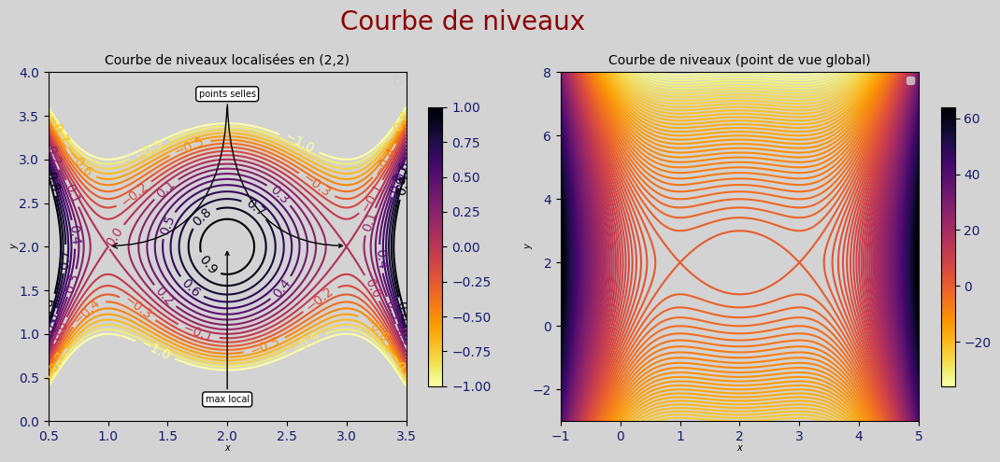
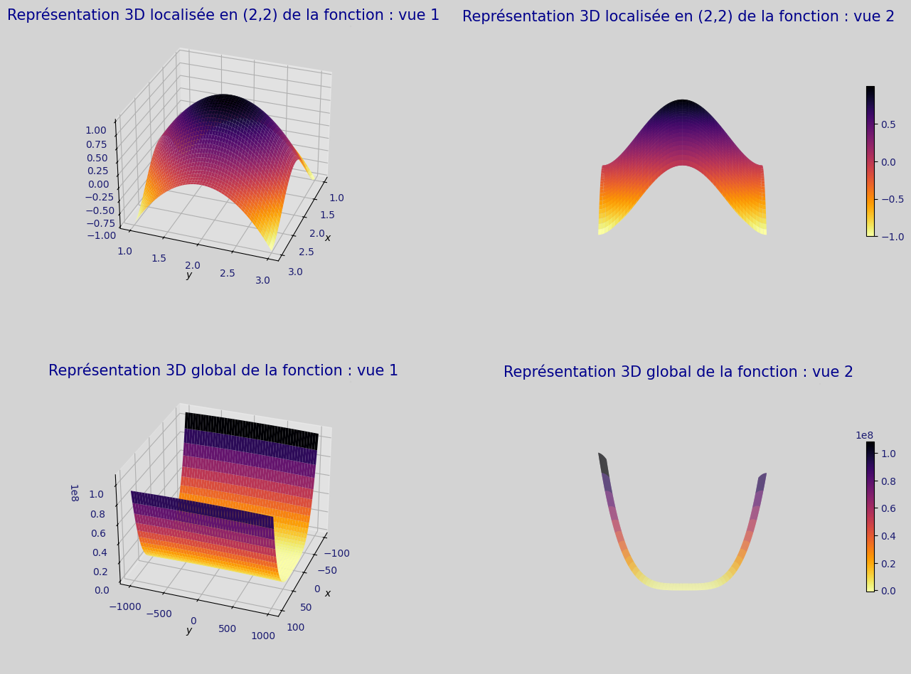
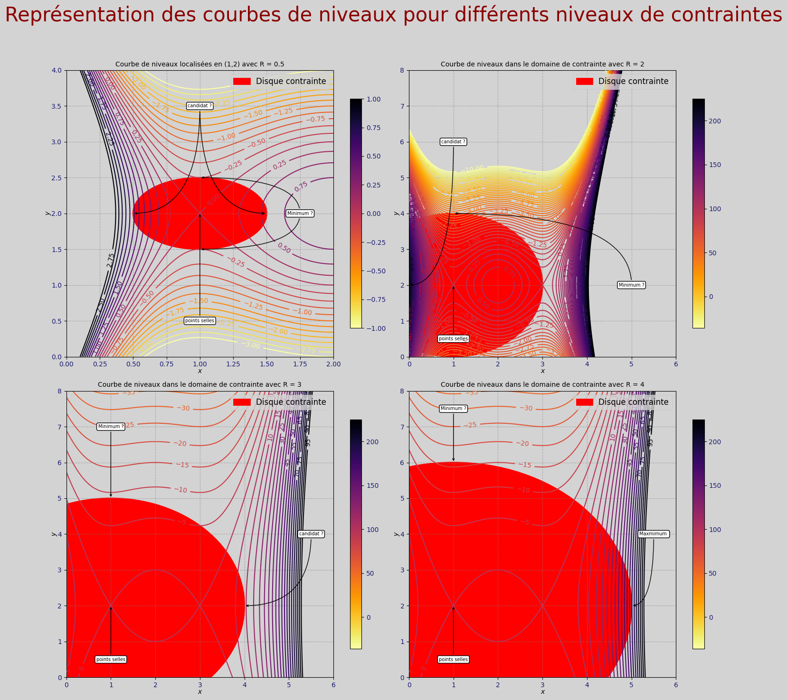
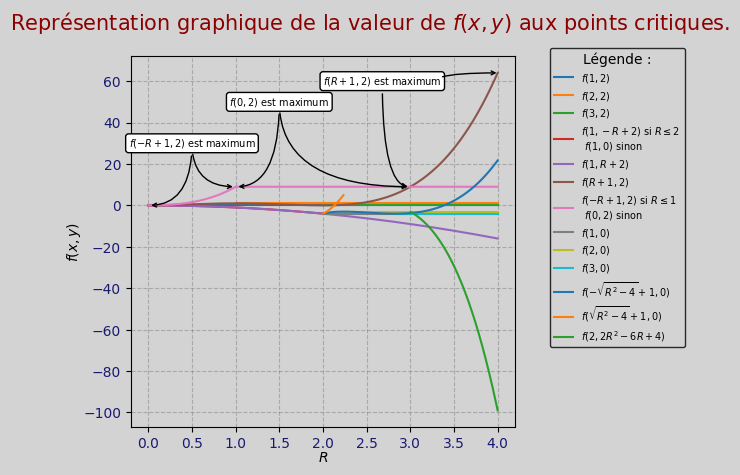

import sympy as sym
import numpy as np
import matplotlib.pyplot as plt
import opti_python_file.Mes_fonctions.Fonction_graphique.Fonction_graphique as fcg
from mpl_toolkits.mplot3d import Axes3D
from matplotlib.colors import Normalize
from matplotlib import cm
import scipy.optimize as so
sym.init_printing()Optimisation sous python
Construction des résultats et des fonctions
Importation des packages
Fonction
Fonction calcul des mineurs :
def desmineurs_sympy(H):
assert np.shape(H)[0] == np.shape(H)[1]
m = []
for i in range(1,np.shape(H)[0]+1):
m.append(sym.det(H[0:i,0:i]))
return mFonction calcul des gradients et hessienne :
def resolution_Ndim(f, par=None ,valpar=None,ordre_symboles=None ):
if par is not None:
assert isinstance(par,list)
if valpar is not None:
assert isinstance(valpar,list)
# Permet d'organiser les résultats
if ordre_symboles !=None:
variables = ordre_symboles
else :
variables = list(f.free_symbols)#[::-1](nécessaire lorsque les free_symbols se lisent à l'envers(dépend des fois))
# On isole les parmaètres afin de ne pas les utiliser comme des variables
if par is not None:
parametre = []
for i in par:
if i != None : parametre.append(variables.pop(i))
#Substitution des paramètres s'ils prennent une valeur particulière
if valpar is not None:
if len(valpar) == len(par):
for i in range(0,len(valpar)):
f = f.subs({parametre[i]:valpar[i]})
#Construction du gradient
derivees = []
for i in variables:
derivees.append(f.diff(i))
gradient = sym.Matrix(len(variables),1,derivees)
pc = sym.solve(gradient,variables)
#Construction de la hessienne
seconde = []
for i in derivees:
for j in variables:
seconde.append(i.diff(j))
hessienne = sym.Matrix(len(variables),len(variables),seconde)#pour transformer une liste en matrice sous sympy
#Calcul des hessiennes aux points critiques
hessienne_pc = []
for i in pc:
subs_dict = {var : val for var, val in zip(variables, i)}
hessienne_pc.append(hessienne.subs(subs_dict))
return gradient,pc,hessienne,hessienne_pc
Fonction resultat optimisation libre :
def opti_libre_sympy(f,ordre_symboles):
# Obtenir les résultats de la résolution
sortie = resolution_Ndim(f,ordre_symboles=ordre_symboles)
mineurs_tp = desmineurs_sympy(sortie[2])
gradient, points_critiques, hessienne, h = sortie
# Vérifier s'il n'y a pas de points critiques
if not points_critiques:
return "Cette fonction n'a pas de points critiques"
resultat = []
mineurs = []
for H in h:
mineurs.append(desmineurs_sympy(H))
m = desmineurs_sympy(H)
is_minimum = np.all([i > 0 for i in m])
is_minimum_zero = np.all([i >= 0 for i in m])
is_maximum = np.all([sym.sign(i) == (-1) ** j for i, j in zip(m, range(1, len(m) + 1))])
is_maximum_zero = np.all([sym.sign(i) == 0 or sym.sign(i) == (-1) ** j for i, j in zip(m, range(1, len(m) + 1))])
is_selle = np.any([sym.sign(m[i]) != (-1) ** (i + 1) and sym.sign(m[i]) != 0 for i in range(1, len(m) + 1, 2)])
is_zero = np.all([i == 0 for i in m])
if is_zero:
resultat.append("On ne peut pas conclure")
elif is_selle:
resultat.append("C'est un point selle")
elif is_minimum:
resultat.append("C'est un minimum local")
elif is_minimum_zero:
resultat.append("On ne peut pas conclure")
elif is_maximum:
resultat.append("C'est un maximum local")
elif is_maximum_zero:
resultat.append("On ne peut pas conclure")
return gradient, points_critiques, hessienne, h, mineurs, resultat, mineurs_tpFontion calcul des gradients KKT et hessienne
x,y,W,R = sym.symbols('x y W R',real = True) #symboles
f = (x-3)**2 * (x-1)**2 - (y-2)**2 #fonction à maximiser
D = (x - 1)**2 + (y - 2)**2 - R**2 #contrainte égalité disque
#Contrainte du disque
Disque = sym.Rel((x - 1)**2 + (y - 2)**2,2**2,'<=')
#Contraintes de positivité
x_pos = sym.Rel(x,0,'>=')
y_pos = sym.Rel(y,0,'>=')
#Lagrangien
L = f-W*D
ordre_symboles = [W,x,y,R]
def resolution_Ndim_KKT(f, par=None ,valpar=None,ordre_symboles=None ):
if par is not None:
assert isinstance(par,list)
if valpar is not None:
assert isinstance(valpar,list)
# Permet d'organiser les résultats
if ordre_symboles !=None:
variables = ordre_symboles
else :
variables = list(f.free_symbols)#[::-1](nécessaire lorsque les free_symbols se lisent à l'envers(dépend des fois))
# On isole les parmaètres afin de ne pas les utiliser comme des variables
if par is not None:
parametre = []
for i in par:
if i != None : parametre.append(variables.pop(i))
#Substditution des paramètres s'ils prennent une valeur particulière
if valpar is not None:
if len(valpar) == len(par):
for i in range(0,len(valpar)):
f = f.subs({parametre[i]:valpar[i]})
#Construction du gradient de KKT
derivees_KKT = []
derivees = []
for i in variables:
derivees.append(f.diff(i))
derivees_KKT.append(i*f.diff(i))
gradient_KKT = sym.Matrix(len(variables),1,derivees_KKT)
pc_KKT = sym.solve(gradient_KKT,variables)
#Construction de la hessienne
seconde = []
for i in derivees:
for j in variables:
seconde.append(i.diff(j))
hessienne = sym.Matrix(len(variables),len(variables),seconde)#pour transformer une liste en matrice sous sympy
#Calcul des hessiennes aux points critiques
hessienne_pc_KKT = []
for i in pc_KKT:
subs_dict = {var : val for var, val in zip(variables, i)}
hessienne_pc_KKT.append(hessienne.subs(subs_dict))
return gradient_KKT,pc_KKT,hessienne,hessienne_pc_KKTFonction détermination des natures des points critiques
def nature_libre(H):
assert np.shape(H)[0]==np.shape(H)[1], "la matrice n'est pas carrée "
mineurs = desmineurs_sympy(H) #nécessite l'importation de la fonction desmineurs
# Mineurs tous positifs ?
zero = np.array([mk == 0 for mk in mineurs ])
if zero.all():
resultat = "On ne peut pas conclure"
return H,mineurs, resultat
mini = np.array([mk > 0 for mk in mineurs ])
mini_zero = np.array([mk >= 0 for mk in mineurs ])
if mini_zero.all() :
if mini.all():
resultat = "C'est un minimum local"
return H,mineurs, resultat
else:
resultat = "On ne peut pas conclure"
return H,mineurs, resultat
# Alternance de signe ?
maxi = np.array([mineurs[k-1] * (-1)**k >0 for k in range(1,len(mineurs)+1) ])
maxi_zero = np.array([mineurs[k-1] * (-1)**k >=0 for k in range(1,len(mineurs)+1) ])
if maxi_zero.all():
if maxi.all():
resultat = "C'est un maximum local"
return H,mineurs,resultat
else:
resultat = "On ne peut pas conclure"
return H,mineurs, resultat
# Est-ce un point selle ?
selle = np.array([mineurs[k-1] * (-1)**k <0 for k in range(1,len(mineurs)+1)] )
if selle.any():
resultat = f'Ce point critique est un point selle.'
return H,mineurs, resultat
else :
resultat = "On ne peut pas conclure"
return H,mineurs, resultat
def nature_sous_contraintes(H,nb_variable,nb_contrainte):
assert isinstance(H,list)
resultat = []
mineurs = []
mineurs_voulue = []
for i in H:
mineurs.append(desmineurs_sympy(i))
for i in mineurs:
mineurs_voulue.append(i[-(nb_variable-nb_contrainte):(len(i)+1)])
for m in mineurs_voulue:
is_zero = np.array([m[i] == 0 for i in range(0,len(m))])
is_minimum = np.array([m[i]*(-1)**(nb_contrainte) > 0 for i in range(0,len(m)) ])
is_minimum_zero = np.array([m[i]*(-1)**(nb_contrainte) >= 0 for i in range(0,len(m)) ])
if len(m) == 1:
is_maximum = np.array([m[len(m)-1]*(-1)**nb_variable>0 for i in range(1,len(m))])
is_maximum_zero = np.array([m[len(m)-1]*(-1)**nb_variable>=0 for i in range(0,len(m))])
else:
is_maximum = np.array([m[i]*m[i-1]<0 and m[len(m)-1]*(-1)**nb_variable>0 for i in range(1,len(m))])
is_maximum_zero = np.array([m[i]*m[i-1]<=0 and m[len(m)-1]*(-1)**nb_variable>=0 for i in range(0,len(m))])
if is_zero.all(): resultat.append("On ne peut pas conclure")
elif is_minimum_zero.all():
if is_minimum.all(): resultat.append("C'est un minimum local")
else: resultat.append("On ne peut pas conclure")
elif is_maximum_zero.all():
if is_maximum.all(): resultat.append("C'est un maximum local")
else:resultat.append("On ne peut pas conclure")
else : resultat.append("C'est un point selle")
return mineurs, mineurs_voulue, resultat
Fonction résolution totale
def resolution_total(v):
x,y,W,w1,w2,R = sym.symbols('x y W w1 w2 R',real = True) #symboles
f = (x-3)**2 * (x-1)**2 - (y-2)**2 #fonction à maximiser
D = (x - 1)**2 + (y - 2)**2 - R**2 #contrainte égalité disque
#Contrainte du disque
Disque = sym.Rel((x - 1)**2 + (y - 2)**2,R**2,'<=')
#Contraintes de positivité
x_pos = sym.Rel(x,0,'>=')
y_pos = sym.Rel(y,0,'>=')
#Lagrangien
L = f-W*D
ordre_symboles = [W,x,y,R]
for v in [v]:
candidat_max = []
val_f_pc_sans_conclu = []
pc_sans_conclu_valide = []
pc_sans_conclu_max = []
pc_sans_conclu_hors_domaine = []
pc_sature = []
hessienne_sature = []
pc_non_sature = []
hessienne_non_sature = []
pc_invalide = []
ordre_symboles = [W,x,y,R]
gradient_KKT,pc_KKT,hessienne_KKT,hessienne_pc_KKT = resolution_Ndim_KKT(L,par=[3],valpar=[v],ordre_symboles=ordre_symboles)
for i,j in zip(pc_KKT,range(0,len(pc_KKT))):
if i[1] < 0 or i[2] <0:
pc_invalide.append(i)
elif i[1]==0 or i[2]==0:
#display(i)
#display("La méthode n'est pas concluante")
#display(f.subs({x:i[1],y:i[2]}))
#display(Disque)
if Disque.subs({x:i[1],y:i[2],R:v}):
pc_sans_conclu_valide.append(i)
val_f_pc_sans_conclu.append(f.subs({x:i[1],y:i[2]}))
else:
pc_sans_conclu_hors_domaine.append(i)
elif i[0]==0:
pc_non_sature.append(i)
hessienne_non_sature.append(hessienne_pc_KKT[j][1:3,1:3])
#display("La contrainte n'est pas saturée")
#display(hessienne_pc_KKT[j][1:3,1:3])
else:
pc_sature.append(i)
hessienne_sature.append(hessienne_pc_KKT[j])
#display("La contrainte est saturée")
#display(hessienne_pc_KKT[j])
for i,j in zip(pc_non_sature,range(0,len(pc_non_sature))) :
H,mineurs, resultat = nature_libre(hessienne_non_sature[j])
for index, i in enumerate(resultat):
if i == "C'est un maximum local":
candidat_max.append(pc_non_sature[index])
mineurs, mineurs_voulue, resultat = nature_sous_contraintes(hessienne_sature,nb_contrainte=1,nb_variable=2)
for index, i in enumerate(resultat):
if i == "C'est un maximum local":
candidat_max.append(pc_sature[index])
if val_f_pc_sans_conclu != [] :
valeur_maximale = max(val_f_pc_sans_conclu)
for i in pc_sans_conclu_valide:
if f.subs({x:i[1],y:i[2]}) == valeur_maximale:
pc_sans_conclu_max.append(i)
for i in pc_sans_conclu_max:
candidat_max.append(i)
f_max = {}
for i in candidat_max:
f_max[i] = f.subs({x:i[1],y:i[2]})
# Trouvez la clé (point) correspondant à la valeur maximale
point_max = max(f_max, key=f_max.get)
valeur_max = f_max[point_max]
texte = f"Pour R ={v}, la valeur maximale de f est {valeur_max} atteinte au point ({point_max[1]},{point_max[2]})"
return pc_non_sature,pc_sans_conclu_max,pc_sature,candidat_max,texteCalculs
Calcul des gradient et hessienne pour tout R
### Résolution du problème pour tout R
x,y,W,w1,w2,R = sym.symbols('x y W w1 w2 R',real = True) #symboles
f = (x-3)**2 * (x-1)**2 - (y-2)**2 #fonction à maximiser
D = (x - 1)**2 + (y - 2)**2 - R**2 #contrainte égalité disque
#Contrainte du disque
Disque = sym.Rel((x - 1)**2 + (y - 2)**2,R**2,'<=')
#Contraintes de positivité
x_pos = sym.Rel(x,0,'>=')
y_pos = sym.Rel(y,0,'>=')
#Lagrangien
L = f-W*D
ordre_symboles = [W,x,y,R]
gradient_KKT,pc_KKT,hessienne,hessienne_pc_KKT = resolution_Ndim_KKT(L,ordre_symboles=ordre_symboles,par=[3])
for i in gradient_KKT,pc_KKT,hessienne,hessienne_pc_KKT:
display(i)
display(desmineurs_sympy(hessienne))
\(\displaystyle \left[\begin{matrix}W \left(R^{2} - \left(x - 1\right)^{2} - \left(y - 2\right)^{2}\right)\\x \left(- W \left(2 x - 2\right) + \left(x - 3\right)^{2} \left(2 x - 2\right) + \left(x - 1\right)^{2} \left(2 x - 6\right)\right)\\y \left(- W \left(2 y - 4\right) - 2 y + 4\right)\end{matrix}\right]\)
\(\displaystyle \left[ \left( -1, \ 0, \ 2 - \sqrt{R^{2} - 1}\right), \ \left( -1, \ 0, \ \sqrt{R^{2} - 1} + 2\right), \ \left( -1, \ 1, \ 2 - R\right), \ \left( -1, \ 1, \ R + 2\right), \ \left( 0, \ 0, \ 0\right), \ \left( 0, \ 0, \ 2\right), \ \left( 0, \ 1, \ 0\right), \ \left( 0, \ 1, \ 2\right), \ \left( 0, \ 2, \ 0\right), \ \left( 0, \ 2, \ 2\right), \ \left( 0, \ 3, \ 0\right), \ \left( 0, \ 3, \ 2\right), \ \left( 2 \left(R - 2\right) \left(R - 1\right), \ R + 1, \ 2\right), \ \left( 2 \left(R + 1\right) \left(R + 2\right), \ 1 - R, \ 2\right), \ \left( 2 R^{2} - 6 \sqrt{R^{2} - 4} - 4, \ \sqrt{R^{2} - 4} + 1, \ 0\right), \ \left( 2 R^{2} + 6 \sqrt{R^{2} - 4} - 4, \ 1 - \sqrt{R^{2} - 4}, \ 0\right)\right]\)
\(\displaystyle \left[\begin{matrix}0 & 2 - 2 x & 4 - 2 y\\2 - 2 x & - 2 W + 2 \left(x - 3\right)^{2} + 2 \left(x - 1\right)^{2} + 2 \left(2 x - 6\right) \left(2 x - 2\right) & 0\\4 - 2 y & 0 & - 2 W - 2\end{matrix}\right]\)
\(\displaystyle \left[ \left[\begin{matrix}0 & 2 & 2 \sqrt{R^{2} - 1}\\2 & 46 & 0\\2 \sqrt{R^{2} - 1} & 0 & 0\end{matrix}\right], \ \left[\begin{matrix}0 & 2 & - 2 \sqrt{R^{2} - 1}\\2 & 46 & 0\\- 2 \sqrt{R^{2} - 1} & 0 & 0\end{matrix}\right], \ \left[\begin{matrix}0 & 0 & 2 R\\0 & 10 & 0\\2 R & 0 & 0\end{matrix}\right], \ \left[\begin{matrix}0 & 0 & - 2 R\\0 & 10 & 0\\- 2 R & 0 & 0\end{matrix}\right], \ \left[\begin{matrix}0 & 2 & 4\\2 & 44 & 0\\4 & 0 & -2\end{matrix}\right], \ \left[\begin{matrix}0 & 2 & 0\\2 & 44 & 0\\0 & 0 & -2\end{matrix}\right], \ \left[\begin{matrix}0 & 0 & 4\\0 & 8 & 0\\4 & 0 & -2\end{matrix}\right], \ \left[\begin{matrix}0 & 0 & 0\\0 & 8 & 0\\0 & 0 & -2\end{matrix}\right], \ \left[\begin{matrix}0 & -2 & 4\\-2 & -4 & 0\\4 & 0 & -2\end{matrix}\right], \ \left[\begin{matrix}0 & -2 & 0\\-2 & -4 & 0\\0 & 0 & -2\end{matrix}\right], \ \left[\begin{matrix}0 & -4 & 4\\-4 & 8 & 0\\4 & 0 & -2\end{matrix}\right], \ \left[\begin{matrix}0 & -4 & 0\\-4 & 8 & 0\\0 & 0 & -2\end{matrix}\right], \ \left[\begin{matrix}0 & - 2 R & 0\\- 2 R & 2 R^{2} + 4 R \left(2 R - 4\right) + 2 \left(R - 2\right)^{2} - 4 \left(R - 2\right) \left(R - 1\right) & 0\\0 & 0 & - 4 \left(R - 2\right) \left(R - 1\right) - 2\end{matrix}\right], \ \left[\begin{matrix}0 & 2 R & 0\\2 R & 2 R^{2} - 4 R \left(- 2 R - 4\right) + 2 \left(- R - 2\right)^{2} - 4 \left(R + 1\right) \left(R + 2\right) & 0\\0 & 0 & - 4 \left(R + 1\right) \left(R + 2\right) - 2\end{matrix}\right], \ \left[\begin{matrix}0 & - 2 \sqrt{R^{2} - 4} & 4\\- 2 \sqrt{R^{2} - 4} & - 2 R^{2} + 4 \sqrt{R^{2} - 4} \left(2 \sqrt{R^{2} - 4} - 4\right) + 12 \sqrt{R^{2} - 4} + 2 \left(\sqrt{R^{2} - 4} - 2\right)^{2} & 0\\4 & 0 & - 4 R^{2} + 12 \sqrt{R^{2} - 4} + 6\end{matrix}\right], \ \left[\begin{matrix}0 & 2 \sqrt{R^{2} - 4} & 4\\2 \sqrt{R^{2} - 4} & - 2 R^{2} - 4 \sqrt{R^{2} - 4} \left(- 2 \sqrt{R^{2} - 4} - 4\right) - 12 \sqrt{R^{2} - 4} + 2 \left(- \sqrt{R^{2} - 4} - 2\right)^{2} & 0\\4 & 0 & - 4 R^{2} - 12 \sqrt{R^{2} - 4} + 6\end{matrix}\right]\right]\)
\(\displaystyle \left[ 0, \ - 4 x^{2} + 8 x - 4, \ 8 W x^{2} - 16 W x + 8 W y^{2} - 32 W y + 40 W - 48 x^{2} y^{2} + 192 x^{2} y - 184 x^{2} + 192 x y^{2} - 768 x y + 752 x - 176 y^{2} + 704 y - 696\right]\)
Graphique
Graphique courbe de niveaux optimisation libre :
x = np.linspace(0.5, 3.5, 300) #abscisses
y = np.linspace(0, 4, 300) #ordonnées
# Création numérique des courbes de niveaux
xx, yy = np.meshgrid(x, y)
ff = (xx - 3)**2 * (xx - 1)**2 - (yy - 2)**2
# NIVEAU GLOBAL
xglob = np.linspace(-1, 5, 1000)
yglob = np.linspace(-3, 8, 1000)
xxglob, yyglob = np.meshgrid(xglob, yglob)
ffglob = (xxglob - 3)**2 * (xxglob - 1)**2 - (yyglob - 2)**2
#Création de la fenêtre graphique
fig, ax = plt.subplots(ncols=2, nrows=1, figsize=(10, 5))
#thème couleur
cmap = plt.get_cmap('inferno')
#mise en place des courbes de niveaux
contour1 = ax[0].contour(xx, yy, ff, np.arange(-1, 1, 0.1), cmap=cmap.reversed())
ax[0].clabel(contour1, inline=1, fontsize=10)
#on normalise les couleurs par rapport à nos données
norm1 = Normalize(vmin=ff.min(), vmax=ff.max())
#et on l'applique au thème couleur de notre graphique
sm1 = plt.cm.ScalarMappable(cmap=cmap.reversed(), norm=norm1)
sm1.set_array([])
#on définit les limites de couelur de l'objet (s'applique aussi aux valeurs extrêmes de la légende)
sm1.set_clim(-1, 1)
ax[0].set_title(f'Courbe de niveaux localisées en (2,2)',size = 10)
fig.colorbar(sm1, ax=ax[0], shrink=0.8)#shrink définit la "taille" de la légende
#annotations :
ax[0].annotate('max local', xy=(2,2-0.01), xytext=(2,0.25),fontsize = 7,va="center", ha="center",
bbox=dict(boxstyle="round", fc="w",facecolor ="lightgrey"),
arrowprops=dict(arrowstyle="->",connectionstyle='angle3'))
ax[0].annotate('', xy=(1,2+0.01), xytext=(2,3.75),va="center", ha="left",
bbox=dict(boxstyle="round", fc="w",facecolor ="lightgrey"),
arrowprops=dict(arrowstyle="->",connectionstyle='angle3',color='black'))
ax[0].annotate('points selles', xy=(3,2+0.01), xytext=(2,3.75),fontsize = 7,va="center", ha="center",
bbox=dict(boxstyle="round", fc="w",facecolor ="lightgrey"),
arrowprops=dict(arrowstyle="->",connectionstyle='angle3',color='black'))
contour2 = ax[1].contour(xxglob, yyglob, ffglob, np.arange(ffglob.min(), ffglob.max(), 1), cmap=cmap.reversed())
norm2 = Normalize(vmin=ffglob.min(), vmax=ffglob.max())
sm2 = plt.cm.ScalarMappable(cmap=cmap.reversed(), norm=norm2)
sm2.set_array([])
sm2.set_clim(ffglob.min(), ffglob.max())
ax[1].set_title(f'Courbe de niveaux (point de vue global)',size = 10)
fig.colorbar(sm2, ax=ax[1], shrink=0.8)
fcg.mon_themev2(fig=fig,Ax=ax,titre="Courbe de niveaux",titre_fontsize=20,
xlabelsize = 7,ylabelsize=7,
show_grid=False,show_legende_a_droite=False,
hauteur_graph = 1,marge_droite_graph=1.1)
plt.show()
Graphique 3d optimisation libre :
# Définition de la grille
# NIVEAU LOCAL
x = np.linspace(1.0, 3.0, 2000)
y = np.linspace(1.0, 3.0, 2000)
xx, yy = np.meshgrid(x, y)
ff = (xx - 3)**2 * (xx - 1)**2 - (yy - 2)**2
# NIVEAU GLOBAL
x_glob = np.linspace(-100.0, 100.0, 2000)
y_glob = np.linspace(-1000.0, 1000.0, 2000)
xx_glob, yy_glob = np.meshgrid(x_glob, y_glob)
ffglob = (xx_glob - 3)**2 * (xx_glob - 1)**2 - (yy_glob - 2)**2
# Création de la figure
fig = plt.figure(figsize=(15, 10)) # Réglez la taille de la figure principale ici
# Création des points de vue
ax1 = fig.add_axes([0.1, 0.5725, 0.3, 0.4], projection='3d') # [left, bottom, width, height]
ax2 = fig.add_axes([0.55, 0.55, 0.4, 0.4], projection='3d')
ax3 = fig.add_axes([0.1, 0.0725, 0.3, 0.4], projection='3d')
ax4 = fig.add_axes([0.55, 0.05, 0.4, 0.4], projection='3d')
cmap = plt.get_cmap('inferno')
surf1 = ax1.plot_surface(xx, yy, ff, cmap=cmap.reversed())
surf2 = ax2.plot_surface(xx, yy, ff, cmap=cmap.reversed())
surf3 = ax3.plot_surface(xx_glob, yy_glob, ffglob, cmap=cmap.reversed())
surf4 = ax4.plot_surface(xx_glob, yy_glob, ffglob, cmap=cmap.reversed())
ax1.view_init(30, 20)
ax2.view_init(0, 270)
ax3.view_init(30, 20)
ax4.view_init(0, 270)
# Titres des sous-graphiques
ax1.set_title('Représentation 3D localisée en (2,2) de la fonction : vue 1', size=15, color='darkblue')
ax2.set_title('Représentation 3D localisée en (2,2) de la fonction : vue 2', size=15, color='darkblue')
ax3.set_title('Représentation 3D global de la fonction : vue 1', size=15, color='darkblue')
ax4.set_title('Représentation 3D global de la fonction : vue 2', size=15, color='darkblue')
# Création de la légende
norm = Normalize(vmin=ff.min(), vmax=ff.max())
sm = plt.cm.ScalarMappable(cmap=cmap.reversed(), norm=norm)
sm.set_array([])
sm.set_clim(ff.min(), ff.max())
norm2 = Normalize(vmin=ffglob.min(), vmax=ffglob.max())
sm2 = plt.cm.ScalarMappable(cmap=cmap.reversed(), norm=norm2)
sm2.set_array([])
sm2.set_clim(ffglob.min(), ffglob.max())
# Ajout de la légende de couleur
fig.colorbar(sm, ax=[ax1, ax2], shrink=0.5) # Réglez la taille ici
fig.colorbar(sm2, ax=[ax3, ax4], shrink=0.5) # Réglez la taille ici
ax = [ax1,ax2,ax3,ax4]
ax2.axis('off')
ax4.axis('off')
fcg.mon_themev2(fig = fig, Ax=ax,
titre="",
marge_droite_graph=1.1,hauteur_graph=0.5,
titre_fontsize=20,legend_fontsize=0,show_legende_a_droite=False)
plt.show()c:\Users\hugoc\Desktop\website_quarto\sections\projets\Dossier_Hugo_Romain\Mes_fonctions\Fonction_graphique\Fonction_graphique.py:294: UserWarning: This figure includes Axes that are not compatible with tight_layout, so results might be incorrect.
return fig.tight_layout(rect=(0, 0.0, marge_droite_graph, hauteur_graph))
Graphique courbes de niveaux sous contraintes :
x = np.linspace(0, 2, 300) #abscisses
y = np.linspace(0, 4, 300) #ordonnées
# Création numérique des courbes de niveaux
xx, yy = np.meshgrid(x, y)
ff = (xx - 3)**2 * (xx - 1)**2 - (yy - 2)**2
# NIVEAU GLOBAL
xglob = np.linspace(0, 6, 1000)
yglob = np.linspace(0, 8, 1000)
xxglob, yyglob = np.meshgrid(xglob, yglob)
ffglob = (xxglob - 3)**2 * (xxglob - 1)**2 - (yyglob - 2)**2
#Disque
R_Disque = [0.5,2,3,4]
centre_disque = (1,2)
#Création de la fenêtre graphique
fig, ax = plt.subplots(ncols=2, nrows=2, figsize=(15, 15))
#thème couleur
cmap = plt.get_cmap('inferno')
#mise en place des courbes de niveaux
contour1 = ax[0,0].contour(xx, yy, ff, np.arange(-3, 3, 0.25), cmap=cmap.reversed())
cercle_1 = plt.Circle(centre_disque,R_Disque[0],fill = 'orange',color = 'red',linestyle = '-',lw = 2,label = 'Disque contrainte')
ax[0,0].add_artist(cercle_1)
ax[0,0].clabel(contour1, inline=1, fontsize=10)
#on normalise les couleurs par rapport à nos données
norm1 = Normalize(vmin=ff.min(), vmax=ff.max())
#et on l'applique au thème couleur de notre graphique
sm1 = plt.cm.ScalarMappable(cmap=cmap.reversed(), norm=norm1)
sm1.set_array([]) #commande nécessaire (essaye de la comprendre)
#on définit les limites de couelur de l'objet (s'applique aussi aux valeurs extrêmes de la légende)
sm1.set_clim(-1, 1)
ax[0,0].set_title(f'Courbe de niveaux localisées en (1,2) avec R = 0.5',size = 10)
fig.colorbar(sm1, ax=ax[0,0], shrink=0.8)#shrink définit la "taille" de la légende
#annotations :
ax[0,0].annotate('candidat ?', xy=(0.5,2), xytext=(1,3.5),fontsize = 7,va="center", ha="center",
bbox=dict(boxstyle="round", fc="w",facecolor ="lightgrey"),
arrowprops=dict(arrowstyle="->",connectionstyle='angle3'))
ax[0,0].annotate('', xy=(1.5,2), xytext=(1,3.5),va="center", ha="left",
bbox=dict(boxstyle="round", fc="w",facecolor ="lightgrey"),
arrowprops=dict(arrowstyle="->",connectionstyle='angle3',color='black'))
ax[0,0].annotate('points selles', xy=(1,2+0.01), xytext=(1,0.5),fontsize = 7,va="center", ha="center",
bbox=dict(boxstyle="round", fc="w",facecolor ="lightgrey"),
arrowprops=dict(arrowstyle="->",connectionstyle='angle3',color='black'))
ax[0,0].annotate('Minimum ?', xy=(1,2.5), xytext=(1.75,2),fontsize = 7,va="center", ha="center",
bbox=dict(boxstyle="round", fc="w",facecolor ="lightgrey"),
arrowprops=dict(arrowstyle="->",connectionstyle='angle3',color='black'))
ax[0,0].annotate('', xy=(1,1.5), xytext=(1.75,2),fontsize = 7,va="center", ha="center",
bbox=dict(boxstyle="round", fc="w",facecolor ="lightgrey"),
arrowprops=dict(arrowstyle="->",connectionstyle='angle3',color='black'))
#mise en place des courbes de niveaux
contour2 = ax[0,1].contour(xxglob, yyglob, ffglob, np.arange(-10, 10, 0.25), cmap=cmap.reversed())
cercle_2 = plt.Circle(centre_disque,R_Disque[1],fill = 'orange',color = 'red',linestyle = '-',lw = 2,label = 'Disque contrainte')
ax[0,1].add_artist(cercle_2)
ax[0,1].clabel(contour2, inline=1, fontsize=10)
#on normalise les couleurs par rapport à nos données
norm2 = Normalize(vmin=ffglob.min(), vmax=ffglob.max())
#et on l'applique au thème couleur de notre graphique
sm2 = plt.cm.ScalarMappable(cmap=cmap.reversed(), norm=norm2)
sm2.set_array([]) #commande nécessaire (essaye de la comprendre)
#on définit les limites de couelur de l'objet (s'applique aussi aux valeurs extrêmes de la légende)
sm2.set_clim(ffglob.min(), ffglob.max())
ax[0,1].set_title(f'Courbe de niveaux dans le domaine de contrainte avec R = 2',size = 10)
fig.colorbar(sm2, ax=ax[0,1], shrink=0.8)#shrink définit la "taille" de la légende
#annotations :
ax[0,1].annotate('candidat ?', xy=(0,2), xytext=(1,6),fontsize = 7,va="center", ha="center",
bbox=dict(boxstyle="round", fc="w",facecolor ="lightgrey"),
arrowprops=dict(arrowstyle="->",connectionstyle='angle3'))
ax[0,1].annotate('points selles', xy=(1,2+0.01), xytext=(1,0.5),fontsize = 7,va="center", ha="center",
bbox=dict(boxstyle="round", fc="w",facecolor ="lightgrey"),
arrowprops=dict(arrowstyle="->",connectionstyle='angle3',color='black'))
ax[0,1].annotate('Minimum ?', xy=(1,4), xytext=(5,2),fontsize = 7,va="center", ha="center",
bbox=dict(boxstyle="round", fc="w",facecolor ="lightgrey"),
arrowprops=dict(arrowstyle="->",connectionstyle='angle3',color='black'))
#mise en place des courbes de niveaux
contour3 = ax[1,0].contour(xxglob, yyglob, ffglob, np.arange(-100, 100, 5), cmap=cmap.reversed())
cercle_3 = plt.Circle(centre_disque,R_Disque[2],fill = 'orange',color = 'red',linestyle = '-',lw = 2,label = 'Disque contrainte')
ax[1,0].add_artist(cercle_3)
ax[1,0].clabel(contour3, inline=1, fontsize=10)
#on normalise les couleurs par rapport à nos données
norm3 = Normalize(vmin=ffglob.min(), vmax=ffglob.max())
#et on l'applique au thème couleur de notre graphique
sm3 = plt.cm.ScalarMappable(cmap=cmap.reversed(), norm=norm3)
sm3.set_array([]) #commande nécessaire (essaye de la comprendre)
#on définit les limites de couelur de l'objet (s'applique aussi aux valeurs extrêmes de la légende)
sm3.set_clim(ffglob.min(), ffglob.max())
ax[1,0].set_title(f'Courbe de niveaux dans le domaine de contrainte avec R = 3',size = 10)
fig.colorbar(sm3, ax=ax[1,0], shrink=0.8)#shrink définit la "taille" de la légende
#annotations :
ax[1,0].annotate('candidat ?', xy=(4,2), xytext=(5.5,4),fontsize = 7,va="center", ha="center",
bbox=dict(boxstyle="round", fc="w",facecolor ="lightgrey"),
arrowprops=dict(arrowstyle="->",connectionstyle='angle3'))
ax[1,0].annotate('points selles', xy=(1,2+0.01), xytext=(1,0.5),fontsize = 7,va="center", ha="center",
bbox=dict(boxstyle="round", fc="w",facecolor ="lightgrey"),
arrowprops=dict(arrowstyle="->",connectionstyle='angle3',color='black'))
ax[1,0].annotate('Minimum ?', xy=(1,5), xytext=(1,7),fontsize = 7,va="center", ha="center",
bbox=dict(boxstyle="round", fc="w",facecolor ="lightgrey"),
arrowprops=dict(arrowstyle="->",connectionstyle='angle3',color='black'))
#mise en place des courbes de niveaux
contour4 = ax[1,1].contour(xxglob, yyglob, ffglob, np.arange(-100, 100, 5), cmap=cmap.reversed())
cercle_4 = plt.Circle(centre_disque,R_Disque[3],fill = 'orange',color = 'red',linestyle = '-',lw = 2,label = 'Disque contrainte')
ax[1,1].add_artist(cercle_4)
ax[1,1].clabel(contour4, inline=1, fontsize=10)
#on normalise les couleurs par rapport à nos données
norm4 = Normalize(vmin=ffglob.min(), vmax=ffglob.max())
#et on l'applique au thème couleur de notre graphique
sm4 = plt.cm.ScalarMappable(cmap=cmap.reversed(), norm=norm4)
sm4.set_array([])
#on définit les limites de couelur de l'objet (s'applique aussi aux valeurs extrêmes de la légende)
sm4.set_clim(ffglob.min(), ffglob.max())
ax[1,1].set_title(f'Courbe de niveaux dans le domaine de contrainte avec R = 4',size = 10)
fig.colorbar(sm4, ax=ax[1,1], shrink=0.8)#shrink définit la "taille" de la légende
#annotations :
ax[1,1].annotate('Maxmimum ', xy=(5,2), xytext=(5.5,4),fontsize = 7,va="center", ha="center",
bbox=dict(boxstyle="round", fc="w",facecolor ="lightgrey"),
arrowprops=dict(arrowstyle="->",connectionstyle='angle3'))
ax[1,1].annotate('points selles', xy=(1,2+0.01), xytext=(1,0.5),fontsize = 7,va="center", ha="center",
bbox=dict(boxstyle="round", fc="w",facecolor ="lightgrey"),
arrowprops=dict(arrowstyle="->",connectionstyle='angle3',color='black'))
ax[1,1].annotate('Minimum ?', xy=(1,6), xytext=(1,7.5),fontsize = 7,va="center", ha="center",
bbox=dict(boxstyle="round", fc="w",facecolor ="lightgrey"),
arrowprops=dict(arrowstyle="->",connectionstyle='angle3',color='black'))
for i in range(2):
for j in range(2):
fcg.mon_theme(fig=fig, Ax=ax[i, j],show_legende_a_droite=False,show_grid=True,
hauteur_graph = 0.95,marge_droite_graph = 1,titre_fontsize = 30,xlabelsize = 10,ylabelsize = 10,
titre = "Représentation des courbes de niveaux pour différents niveaux de contraintes",
legend_fontsize = 12)
plt.show()

Graphique f(x,y) en tout R
# Comparaison pour tout R
import sympy as sym
import numpy as np
import matplotlib.pyplot as plt
R, x, y = sym.symbols('R x y')
R_values = np.linspace(0, 4, 1000)
f = (x-3)**2 * (x-1)**2 - (y-2)**2
def calculer_f12(R):
f12 = f.subs({x: 1, y: 2})
return f12
def calculer_f22(R):
if R < 1:
return None
else:
f22 = f.subs({x: 2, y: 2})
return f22
def calculer_f32(R):
if R < 2:
return None
else:
f32 = f.subs({x: 3, y: 2})
return f32
def calculer_f10(R):
if R < 2:
return None
else:
f10 = f.subs({x: 1, y: 0})
return f10
def calculer_f20(R):
if R < sym.sqrt(5):
return None
else:
f20 = f.subs({x: 2, y: 0})
return f20
def calculer_f30(R):
if R < 2*sym.sqrt(2):
return None
else:
f30 = f.subs({x: 3, y: 0})
return f30
def calculer_f1crit(R):
if R < 2:
f1crit = -(R**2)
else:
f1crit = -(2**2)
return f1crit
def calculer_f2crit(R):
f2crit = -(R**2)
return f2crit
def calculer_f3crit(R):
f3crit = R**2 * (R - 2)**2
return f3crit
def calculer_f4crit(R):
if R <= 1:
f4crit = R**2 * (-R - 2)**2
else:
f4crit = 1**2 * (-1 - 2)**2
return f4crit
def calculer_f5crit(R):
if R >= 2:
f5crit = f.subs({x:sym.sqrt(R**2 -4)+1,y:0})
else:
return None
return f5crit
def calculer_f6crit(R):
if R >= 2 and R <= sym.sqrt(5):
f6crit = f.subs({x:-sym.sqrt(R**2 -4)+1,y:0})
else:
return None
return f6crit
def calculer_f7crit(R):
if R >= 3:
f7crit = f.subs({x:2,y:2*R**2 -6*R + 4})
else:
return None
return f7crit
expr12_values = [calculer_f12(r) for r in R_values]
expr22_values = [calculer_f22(r) for r in R_values]
expr32_values = [calculer_f32(r) for r in R_values]
expr10_values = [calculer_f10(r) for r in R_values]
expr20_values = [calculer_f20(r) for r in R_values]
expr30_values = [calculer_f30(r) for r in R_values]
expr1crit_values = [calculer_f1crit(r) for r in R_values]
expr2crit_values = [calculer_f2crit(r) for r in R_values]
expr3crit_values = [calculer_f3crit(r) for r in R_values]
expr4crit_values = [calculer_f4crit(r) for r in R_values]
expr5crit_values = [calculer_f5crit(r) for r in R_values]
expr6crit_values = [calculer_f6crit(r) for r in R_values]
expr7crit_values = [calculer_f7crit(r) for r in R_values]
fig,Ax = plt.subplots(ncols=1,nrows=1)
Ax.plot(R_values, expr12_values, label='$f(1,2)$')
Ax.plot(R_values, expr22_values, label='$f(2,2)$')
Ax.plot(R_values, expr32_values, label='$f(3,2)$')
Ax.plot(R_values, expr1crit_values, label='$f(1, -R+2)$ si $R \leq 2$ \n $f(1,0)$ sinon')
Ax.plot(R_values, expr2crit_values, label='$f(1, R+2)$')
Ax.plot(R_values, expr3crit_values, label='$f(R+1, 2)$')
Ax.plot(R_values, expr4crit_values, label='$f(-R+1, 2)$ si $R \leq 1$ \n $f(0,2)$ sinon')
Ax.plot(R_values, expr10_values, label='$f(1,0)$')
Ax.plot(R_values, expr20_values, label='$f(2,0)$')
Ax.plot(R_values, expr30_values, label='$f(3,0)$')
Ax.plot(R_values, expr5crit_values, label='$f(-\sqrt{R^2 -4}+1, 0)$')
Ax.plot(R_values, expr6crit_values, label='$f(\sqrt{R^2 -4}+1, 0)$')
Ax.plot(R_values, expr7crit_values, label='$f(2, 2R^2 -6R +4)$')
Ax.annotate('$f(-R+1,2)$ est maximum', xy=(0,0), xytext=(0.5,30),fontsize = 7,va="center", ha="center",
bbox=dict(boxstyle="round", fc="w",facecolor ="lightgrey"),
arrowprops=dict(arrowstyle="->",connectionstyle='angle3'))
Ax.annotate('', xy=(1,9), xytext=(0.5,30),fontsize = 7,va="center", ha="center",
bbox=dict(boxstyle="round", fc="w",facecolor ="lightgrey"),
arrowprops=dict(arrowstyle="->",connectionstyle='angle3'))
Ax.annotate('$f(0,2)$ est maximum', xy=(1,9), xytext=(1.5,50),fontsize = 7,va="center", ha="center",
bbox=dict(boxstyle="round", fc="w",facecolor ="lightgrey"),
arrowprops=dict(arrowstyle="->",connectionstyle='angle3'))
Ax.annotate('', xy=(3,9), xytext=(1.5,50),fontsize = 7,va="center", ha="center",
bbox=dict(boxstyle="round", fc="w",facecolor ="lightgrey"),
arrowprops=dict(arrowstyle="->",connectionstyle='angle3'))
Ax.annotate('$f(R+1,2)$ est maximum', xy=(3,9), xytext=(2,60),fontsize = 7,va="center", ha="left",
bbox=dict(boxstyle="round", fc="w",facecolor ="lightgrey"),
arrowprops=dict(arrowstyle="->",connectionstyle='angle3',color='black'))
Ax.annotate('', xy=(4.02,64), xytext=(3.3,60),fontsize = 7,va="center", ha="left",
bbox=dict(boxstyle="round", fc="w",facecolor ="lightgrey"),
arrowprops=dict(arrowstyle="->",connectionstyle='angle3',color='black'))
fcg.mon_theme(fig = fig, Ax = Ax,show_legende_a_droite=True,
titre="Représentation graphique de la valeur de $f(x,y)$ aux points critiques.",
ylabel = '$f(x,y)$',xlabel = "$R$",
marge_droite_graph = 0.75,show_grid =True )
# Trouvez l'expression la plus grande<>:126: SyntaxWarning: invalid escape sequence '\l'
<>:129: SyntaxWarning: invalid escape sequence '\l'
<>:133: SyntaxWarning: invalid escape sequence '\s'
<>:134: SyntaxWarning: invalid escape sequence '\s'
<>:126: SyntaxWarning: invalid escape sequence '\l'
<>:129: SyntaxWarning: invalid escape sequence '\l'
<>:133: SyntaxWarning: invalid escape sequence '\s'
<>:134: SyntaxWarning: invalid escape sequence '\s'
C:\Users\hugoc\AppData\Local\Temp\ipykernel_26360\920089269.py:126: SyntaxWarning: invalid escape sequence '\l'
Ax.plot(R_values, expr1crit_values, label='$f(1, -R+2)$ si $R \leq 2$ \n $f(1,0)$ sinon')
C:\Users\hugoc\AppData\Local\Temp\ipykernel_26360\920089269.py:129: SyntaxWarning: invalid escape sequence '\l'
Ax.plot(R_values, expr4crit_values, label='$f(-R+1, 2)$ si $R \leq 1$ \n $f(0,2)$ sinon')
C:\Users\hugoc\AppData\Local\Temp\ipykernel_26360\920089269.py:133: SyntaxWarning: invalid escape sequence '\s'
Ax.plot(R_values, expr5crit_values, label='$f(-\sqrt{R^2 -4}+1, 0)$')
C:\Users\hugoc\AppData\Local\Temp\ipykernel_26360\920089269.py:134: SyntaxWarning: invalid escape sequence '\s'
Ax.plot(R_values, expr6crit_values, label='$f(\sqrt{R^2 -4}+1, 0)$')
Introduction au problème d’optimisation
Partie 1 : Optimisation libre
\[ \underset{x,y}{\text{Argmax}} \ f(x,y)=(x-3)^2(x-1)^2-(y-2)^2 \]
Partie 2 : Optimisation sous contraintes
Détermination du maximum de \(f\) dans \((\mathcal{D}_R \cap \left(\mathbb{R}_+ \times \mathbb{R}_+\right))\) en fonction du paramètre \((R > 0)\). (Une analyse graphique est fortement appréciée)
On a le problème de maximisation suivant :
\[ \begin{aligned} & \underset{x,y}{\text{Max}} & & f(x,y) = (x-3)^2(x-1)^2 - (y-2)^2 \\ & \text{sous les contraintes} & & \begin{cases} R^2 \geq (x-1)^2 + (y-2)^2 \\ x \geq 0 \\ y \geq 0 \end{cases} \end{aligned} \]
Partie 3 : Optimisation sous contraintes
Soit maintenant la fonction \(g(x,y,z)=(x-3)^2(x-1)^2-(y-2)^2+\lambda z^2\) et \(\Theta_R=\mathcal{D}_R\times [-5,5]\)
Déterminer le maximum de \(g_\lambda\) dans \(\Theta_R \cap \left(\mathbb{R}_+\times \mathbb{R}_+\times \mathbb{R}_+\right).\) en fonction des paramètres \(R>0\) et \(\lambda \in \mathbb{R}\). (On utlisera du calcul numérique pour différentes valeurs des paramètres et on comparera les résultats).
Etude de l’exercice
Partie 1 : Optimisation libre
On a le problème de maximisation suivant:
\[ \underset{x,y}{\text{Argmax}} \ f(x,y)=(x-3)^2(x-1)^2-(y-2)^2 \]
Nous allons tout d’abord visualiser les courbes de niveaux :
ordre_symboles = [x,y]
Gradient,pc,Hessienne,H, mineurs,resultat,mineurs_tp = opti_libre_sympy(f,ordre_symboles= ordre_symboles)
sym.init_printing(order='lex')
for i in Gradient,pc,Hessienne,H, mineurs,resultat,mineurs_tp:
display(i)
for i in H:
for j in nature_libre(i):
display(j)
f_val = []
for i in pc :
f_val.append(f.subs({x:i[0],y:i[1]}))\(\displaystyle \left[\begin{matrix}\left(x - 3\right)^{2} \left(2 x - 2\right) + \left(x - 1\right)^{2} \left(2 x - 6\right)\\- 2 y + 4\end{matrix}\right]\)
\(\displaystyle \left[ \left( 1, \ 2\right), \ \left( 2, \ 2\right), \ \left( 3, \ 2\right)\right]\)
\(\displaystyle \left[\begin{matrix}2 \left(x - 3\right)^{2} + 2 \left(x - 1\right)^{2} + 2 \left(2 x - 6\right) \left(2 x - 2\right) & 0\\0 & -2\end{matrix}\right]\)
\(\displaystyle \left[ \left[\begin{matrix}8 & 0\\0 & -2\end{matrix}\right], \ \left[\begin{matrix}-4 & 0\\0 & -2\end{matrix}\right], \ \left[\begin{matrix}8 & 0\\0 & -2\end{matrix}\right]\right]\)
\(\displaystyle \left[ \left[ 8, \ -16\right], \ \left[ -4, \ 8\right], \ \left[ 8, \ -16\right]\right]\)
["C'est un point selle", "C'est un maximum local", "C'est un point selle"]\(\displaystyle \left[ 2 \left(x - 3\right)^{2} + 2 \left(x - 1\right)^{2} + 2 \left(2 x - 6\right) \left(2 x - 2\right), \ - 24 x^{2} + 96 x - 88\right]\)
\(\displaystyle \left[\begin{matrix}8 & 0\\0 & -2\end{matrix}\right]\)
\(\displaystyle \left[ 8, \ -16\right]\)
'Ce point critique est un point selle.'\(\displaystyle \left[\begin{matrix}-4 & 0\\0 & -2\end{matrix}\right]\)
\(\displaystyle \left[ -4, \ 8\right]\)
"C'est un maximum local"\(\displaystyle \left[\begin{matrix}8 & 0\\0 & -2\end{matrix}\right]\)
\(\displaystyle \left[ 8, \ -16\right]\)
'Ce point critique est un point selle.'Le gradient de \(f\) est :
\[\nabla \begin{bmatrix} (x-3)^2 \cdot (2x-2) + (x-1)^2 \cdot (2x-6) \\ -2y + 4 \end{bmatrix}\]
dont les points critiques sont :
\[ (1,2) \\ (2,2) \\ (3,2) \\ \]
- La hessienne au point \((1,2)\) est :
\[H(1,2) = \begin{bmatrix} 8 & 0 \\ 0 & -2 \end{bmatrix}\]
Les mineurs de cette matrice sont \(m1 = 8\) et \(m2 = -16\), un mineur d’ordre pair étant négatif, on peut affirmer que le point \((1,2)\) est un point selle.
- La hessienne au point \((2,2)\) est :
\[H(2,2) = \begin{bmatrix} -4 & 0 \\ 0 & -2 \end{bmatrix}\]
Les mineurs de cette matrice sont \(m1 = -4\) et \(m2 = 8\), les mineurs de cette matrice remplissent donc les conditions suffisantes d’ordre 2, donc \((2,2)\) est un maximum local
- La hessienne au point \((3,2)\) est :
\[H(3,2) = \begin{bmatrix} 8 & 0 \\ 0 & -2 \end{bmatrix}\]
Les mineurs de cette matrice sont \(m1 = 8\) et \(m2 = -16\), un mineur d’ordre pair étant négatif, on peut affirmer que le point \((3,2)\) est un point selle
Nous pouvons donc conclure que : - \(f\) admet un maximum local en \((2,2)\) qui est de \(f(2,2) = 1\) - et deux points selles \((1,2)\) et \((3,2)\) où \(f(1,2) = f(3,2) = 0\)
Cette visualisation 3d est une bonne manière de visualiser la localité de ce maximum :
2ème partie
Détermination du maximum de \(f\) dans \((\mathcal{D}_R \cap \left(\mathbb{R}_+ \times \mathbb{R}_+\right))\) en fonction du paramètre \((R > 0)\). (Une analyse graphique est fortement appréciée)
On a le problème de maximisation suivant:
\[ \begin{aligned} & \underset{x,y}{\text{Max}} & & f(x,y) = (x-3)^2(x-1)^2 - (y-2)^2 \\ & \text{sous les contraintes} & & \begin{cases} R^2 \geq (x-1)^2 + (y-2)^2 \\ x \geq 0 \\ y \geq 0 \end{cases} \end{aligned} \]
Nous pouvons déjà commencer par observer les courbes de niveaux pour plusieurs valeurs de R:
Nous pouvons réécrire ce problème ainsi :
\[ \begin{aligned} & \underset{x,y,\lambda}{\text{Max}} & & \mathcal{L}(x,y,\lambda) = (x - 3)^2 (x - 1)^2 - (y - 2)^2 - \lambda( -R^2 + (x - 1)^2 + (y - 2)^2) \\ & \text{sous les contraintes} & & \begin{cases} x \geq 0 \\ y \geq 0 \end{cases} \end{aligned} \]
x,y,W,w1,w2,R = sym.symbols('x y W w1 w2 R',real = True) #symboles
f = (x-3)**2 * (x-1)**2 - (y-2)**2 #fonction à maximiser
D = (x - 1)**2 + (y - 2)**2 - R**2 #contrainte égalité disque
#Contrainte du disque
Disque = sym.Rel((x - 1)**2 + (y - 2)**2,R**2,'<=')
#Contraintes de positivité
x_pos = sym.Rel(x,0,'>=')
y_pos = sym.Rel(y,0,'>=')
#Lagrangien
L = f-W*D
ordre_symboles = [W,x,y,R]
gradient_KKT,pc_KKT,hessienne_KKT,hessienne_pc_KKT = resolution_Ndim_KKT(L,par=[3],ordre_symboles=ordre_symboles)
for i in gradient_KKT,pc_KKT,hessienne_KKT,hessienne_pc_KKT:
display(i)\(\displaystyle \left[\begin{matrix}W \left(R^{2} - \left(x - 1\right)^{2} - \left(y - 2\right)^{2}\right)\\x \left(- W \left(2 x - 2\right) + \left(x - 3\right)^{2} \left(2 x - 2\right) + \left(x - 1\right)^{2} \left(2 x - 6\right)\right)\\y \left(- W \left(2 y - 4\right) - 2 y + 4\right)\end{matrix}\right]\)
\(\displaystyle \left[ \left( -1, \ 0, \ - \sqrt{R^{2} - 1} + 2\right), \ \left( -1, \ 0, \ \sqrt{R^{2} - 1} + 2\right), \ \left( -1, \ 1, \ - R + 2\right), \ \left( -1, \ 1, \ R + 2\right), \ \left( 0, \ 0, \ 0\right), \ \left( 0, \ 0, \ 2\right), \ \left( 0, \ 1, \ 0\right), \ \left( 0, \ 1, \ 2\right), \ \left( 0, \ 2, \ 0\right), \ \left( 0, \ 2, \ 2\right), \ \left( 0, \ 3, \ 0\right), \ \left( 0, \ 3, \ 2\right), \ \left( 2 \left(R - 2\right) \left(R - 1\right), \ R + 1, \ 2\right), \ \left( 2 \left(R + 1\right) \left(R + 2\right), \ - R + 1, \ 2\right), \ \left( 2 R^{2} - 6 \sqrt{R^{2} - 4} - 4, \ \sqrt{R^{2} - 4} + 1, \ 0\right), \ \left( 2 R^{2} + 6 \sqrt{R^{2} - 4} - 4, \ - \sqrt{R^{2} - 4} + 1, \ 0\right)\right]\)
\(\displaystyle \left[\begin{matrix}0 & - 2 x + 2 & - 2 y + 4\\- 2 x + 2 & - 2 W + 2 \left(x - 3\right)^{2} + 2 \left(x - 1\right)^{2} + 2 \left(2 x - 6\right) \left(2 x - 2\right) & 0\\- 2 y + 4 & 0 & - 2 W - 2\end{matrix}\right]\)
\(\displaystyle \left[ \left[\begin{matrix}0 & 2 & 2 \sqrt{R^{2} - 1}\\2 & 46 & 0\\2 \sqrt{R^{2} - 1} & 0 & 0\end{matrix}\right], \ \left[\begin{matrix}0 & 2 & - 2 \sqrt{R^{2} - 1}\\2 & 46 & 0\\- 2 \sqrt{R^{2} - 1} & 0 & 0\end{matrix}\right], \ \left[\begin{matrix}0 & 0 & 2 R\\0 & 10 & 0\\2 R & 0 & 0\end{matrix}\right], \ \left[\begin{matrix}0 & 0 & - 2 R\\0 & 10 & 0\\- 2 R & 0 & 0\end{matrix}\right], \ \left[\begin{matrix}0 & 2 & 4\\2 & 44 & 0\\4 & 0 & -2\end{matrix}\right], \ \left[\begin{matrix}0 & 2 & 0\\2 & 44 & 0\\0 & 0 & -2\end{matrix}\right], \ \left[\begin{matrix}0 & 0 & 4\\0 & 8 & 0\\4 & 0 & -2\end{matrix}\right], \ \left[\begin{matrix}0 & 0 & 0\\0 & 8 & 0\\0 & 0 & -2\end{matrix}\right], \ \left[\begin{matrix}0 & -2 & 4\\-2 & -4 & 0\\4 & 0 & -2\end{matrix}\right], \ \left[\begin{matrix}0 & -2 & 0\\-2 & -4 & 0\\0 & 0 & -2\end{matrix}\right], \ \left[\begin{matrix}0 & -4 & 4\\-4 & 8 & 0\\4 & 0 & -2\end{matrix}\right], \ \left[\begin{matrix}0 & -4 & 0\\-4 & 8 & 0\\0 & 0 & -2\end{matrix}\right], \ \left[\begin{matrix}0 & - 2 R & 0\\- 2 R & 2 R^{2} + 4 R \left(2 R - 4\right) + 2 \left(R - 2\right)^{2} - 4 \left(R - 2\right) \left(R - 1\right) & 0\\0 & 0 & - 4 \left(R - 2\right) \left(R - 1\right) - 2\end{matrix}\right], \ \left[\begin{matrix}0 & 2 R & 0\\2 R & 2 R^{2} - 4 R \left(- 2 R - 4\right) + 2 \left(- R - 2\right)^{2} - 4 \left(R + 1\right) \left(R + 2\right) & 0\\0 & 0 & - 4 \left(R + 1\right) \left(R + 2\right) - 2\end{matrix}\right], \ \left[\begin{matrix}0 & - 2 \sqrt{R^{2} - 4} & 4\\- 2 \sqrt{R^{2} - 4} & - 2 R^{2} + 4 \sqrt{R^{2} - 4} \left(2 \sqrt{R^{2} - 4} - 4\right) + 12 \sqrt{R^{2} - 4} + 2 \left(\sqrt{R^{2} - 4} - 2\right)^{2} & 0\\4 & 0 & - 4 R^{2} + 12 \sqrt{R^{2} - 4} + 6\end{matrix}\right], \ \left[\begin{matrix}0 & 2 \sqrt{R^{2} - 4} & 4\\2 \sqrt{R^{2} - 4} & - 2 R^{2} - 4 \sqrt{R^{2} - 4} \left(- 2 \sqrt{R^{2} - 4} - 4\right) - 12 \sqrt{R^{2} - 4} + 2 \left(- \sqrt{R^{2} - 4} - 2\right)^{2} & 0\\4 & 0 & - 4 R^{2} - 12 \sqrt{R^{2} - 4} + 6\end{matrix}\right]\right]\)
En dérivant le lagrangien et en utilisant la méthode de Ken-tucker, nous obtenons le gradient suivant :
\[\nabla \begin{bmatrix} x \cdot (-W(2x-2) + (x-3)^2 \cdot (2x-2) + (x-1)^2 \cdot (2x-6)) \\ y \cdot (-W(2y-4) - 2y + 4) \\ \lambda \cdot (R^2 - (x-1)^2 - (y-2)^2) \end{bmatrix}\]
dont les points critiques \((\lambda,x,y)\) sont :
\((-1, 0, -\sqrt{R^2 - 1} + 2)\) ; \(\lambda = -1\), ce n’est donc pas un candidat au max
\((-1, 0, \sqrt{R^2 - 1} + 2)\) ; \(\lambda = -1\), ce n’est donc pas un candidat au max
\((-1, 1, -R + 2)\) si \(R \geq 2\) ; \(\lambda = -1\), ce n’est donc pas un candidat au max
\((-1, 1, R + 2)\) ; \(\lambda = -1\), ce n’est donc pas un candidat au max
\((0, 0, 0)\) si \(R \geq \sqrt5\)
\((0, 0, 2)\) si \(R \geq 1\)
\((0, 1, 0)\) si \(R \geq 2\)
\((0, 1, 2)\) on a vu lors de l’optimisation libre que ce point était un point selle
\((0, 2, 0)\) si \(R \geq \sqrt5\)
\((0, 2, 2)\) si \(R \geq 1\), on a vu lors de l’optimisation libre que ce point était un maximum local
\((0, 3, 0)\) si \(R \geq 2 \cdot\sqrt2\)
\((0, 3, 2)\) si \(R \geq 2\) on a vu lors de l’optimisation libre que ce point était un point selle
\((2(R - 2)(R - 1), R + 1, 2)\) candidat au max si \(R \in ]0,1[\cup]2,+\infty[\)
\((2(R + 1)(R + 2), -R + 1, 2)\) si \(R \leq 1\)
\((2R^2 - 6\sqrt{R^2 - 4} - 4, \sqrt{R^2 - 4} + 1, 0)\) si \(R \geq 2\)
\((2R^2 + 6\sqrt{R^2 - 4} - 4, -\sqrt{R^2 - 4} + 1, 0)\) si \(R \in [2,\sqrt5]\)
\((1, -R+2, -1)\) impossible car \((x,y) \geq (0,0)\)
\((1, R+2, -1)\) impossible car \((x,y) \geq (0,0)\)
\((R+1, 2, 2R^2 - 6R+4)\) si \(R \geq 3\)
\((-R+1, 2, 2R^2 + 6R+4)\) candidat au max si \(R \leq 1\)
Nous avons donc différentes situations selon la valeur de R :
- \(R \in ]0,1[\)
x,y,W,w1,w2,R = sym.symbols('x y W w1 w2 R',real = True) #symboles
f = (x-3)**2 * (x-1)**2 - (y-2)**2 #fonction à maximiser
D = (x - 1)**2 + (y - 2)**2 - R**2 #contrainte égalité disque
#Contrainte du disque
Disque = sym.Rel((x - 1)**2 + (y - 2)**2,R**2,'<=')
#Contraintes de positivité
x_pos = sym.Rel(x,0,'>=')
y_pos = sym.Rel(y,0,'>=')
#Lagrangien
L = f-W*D
ordre_symboles = [W,x,y,R]
v = 0.5
candidat_max = []
val_f_pc_sans_conclu = []
pc_sans_conclu_valide = []
pc_sans_conclu_max = []
pc_sans_conclu_hors_domaine = []
pc_sature = []
hessienne_sature = []
pc_non_sature = []
hessienne_non_sature = []
pc_invalide = []
ordre_symboles = [W,x,y,R]
gradient_KKT,pc_KKT,hessienne_KKT,hessienne_pc_KKT = resolution_Ndim_KKT(L,par=[3],valpar=[v],ordre_symboles=ordre_symboles)
for i,j in zip(pc_KKT,range(0,len(pc_KKT))):
if i[1] < 0 or i[2] <0:
pc_invalide.append(i)
elif i[1]==0 or i[2]==0:
#display(i)
#display("La méthode n'est pas concluante")
#display(f.subs({x:i[1],y:i[2]}))
#display(Disque)
if Disque.subs({x:i[1],y:i[2],R:v}):
pc_sans_conclu_valide.append(i)
val_f_pc_sans_conclu.append(f.subs({x:i[1],y:i[2]}))
else:
pc_sans_conclu_hors_domaine.append(i)
elif i[0]==0:
pc_non_sature.append(i)
hessienne_non_sature.append(hessienne_pc_KKT[j][1:3,1:3])
#display("La contrainte n'est pas saturée")
#display(hessienne_pc_KKT[j][1:3,1:3])
else:
pc_sature.append(i)
hessienne_sature.append(hessienne_pc_KKT[j])
#display("La contrainte est saturée")
#display(hessienne_pc_KKT[j])
for i,j in zip(pc_non_sature,range(0,len(pc_non_sature))) :
H,mineurs, resultat = nature_libre(hessienne_non_sature[j])
for index, i in enumerate(resultat):
if i == "C'est un maximum local":
candidat_max.append(pc_non_sature[index])
mineurs, mineurs_voulue, resultat = nature_sous_contraintes(hessienne_sature,nb_contrainte=1,nb_variable=2)
for index, i in enumerate(resultat):
if i == "C'est un maximum local":
candidat_max.append(pc_sature[index])
if val_f_pc_sans_conclu != [] :
valeur_maximale = max(val_f_pc_sans_conclu)
for i in pc_sans_conclu_valide:
if f.subs({x:i[1],y:i[2]}) == valeur_maximale:
pc_sans_conclu_max.append(i)
for i in pc_sans_conclu_max:
candidat_max.append(i)
f_max = {}
for i in candidat_max:
f_max[i] = f.subs({x:i[1],y:i[2]})
# Trouvez la clé (point) correspondant à la valeur maximale
point_max = max(f_max, key=f_max.get)
valeur_max = f_max[point_max]
texte = f"Pour R ={v}, la valeur maximale de f est {valeur_max} atteinte au point ({point_max[1]},{point_max[2]})"
display(texte)'Pour R =0.5, la valeur maximale de f est 9.00000000000000 atteinte au point (0.0,2.00000000000000)'- \(R = 1\)
resolution_total(v=1)[4]'Pour R =1, la valeur maximale de f est 9 atteinte au point (0,2)'- \(R \in ]1,2[\)
resolution_total(v=1.5)[4]'Pour R =1.5, la valeur maximale de f est 9.00000000000000 atteinte au point (0.0,2.00000000000000)'- \(R = 2\)
resolution_total(v=2)[4]'Pour R =2, la valeur maximale de f est 9 atteinte au point (0,2)'- \(R \in ]2, \sqrt5[\)
resolution_total(v=2.1)[4]'Pour R =2.1, la valeur maximale de f est 9.00000000000000 atteinte au point (0.0,2.00000000000000)'- \(R = \sqrt5\)
resolution_total(v=sym.sqrt(5))[4]'Pour R =sqrt(5), la valeur maximale de f est 9 atteinte au point (0,2)'- \(R \in ]\sqrt5, 2\cdot\sqrt2[\)
resolution_total(v=2.5)[4]'Pour R =2.5, la valeur maximale de f est 9.00000000000000 atteinte au point (0.0,2.00000000000000)'- \(R = 2\cdot\sqrt2\)
resolution_total(v=2*sym.sqrt(2))[4]'Pour R =2*sqrt(2), la valeur maximale de f est 9 atteinte au point (0,2)'- \(R \in ]2\cdot\sqrt2, 3[\)
resolution_total(v=2.95)[4]'Pour R =2.95, la valeur maximale de f est 9.00000000000000 atteinte au point (0.0,2.00000000000000)'- \(R = 3\)
resolution_total(v=3)[4]'Pour R =3, la valeur maximale de f est 9 atteinte au point (4,2)'- \(R \geq 3\)
resolution_total(v=5)[4]'Pour R =5, la valeur maximale de f est 225 atteinte au point (6,2)'Observons le comportement de la fonction aux différents points candidats :
Ces différents résultats nous permettent de conclure que :
\[f(x,y)=(x-3)^2(x-1)^2-(y-2)^2 \\ \]
sous les contraintes suivantes :
\[R^2 \geq (x-1)^2 + (y-2)^2 \\ x \geq 0 \\ y \geq 0 \\ R \gt 0\]
atteint son maximum au point \((-R +1,2)\) lorsque \(R \leq 1\) \(\\\) Sa valeur à ce point est \(f(-R+1,2) = R^2 \cdot(-R-2)^2\)
atteint son maximum au point \((0,2)\) lorsque \(R \in [1,3[ \\\) Sa valeur à ce point est $f(0,2) = 9 $
atteint son maximum aux points \((4,2)\) et \((0,2)\) lorsque \(R = 3\) \(\\\) Sa valeur à ce point est \(f(R+1,2) = R^2 \cdot(R-2)^2 = 9\)
atteint son maximum au point \((R+1,2)\) lorsque \(R \gt 3\) \(\\\) Sa valeur à ce point est $f(R+1,2) = R^2 (R-2)^2 $
3 ème partie :
Soit maintenant la fonction \(g(x,y,z)=(x-3)^2(x-1)^2-(y-2)^2+\lambda z^2\) et \(\Theta_R=\mathcal{D}_R\times [-5,5]\)
Déterminer le maximum de \(g_\lambda\) dans \(\Theta_R \cap \left(\mathbb{R}_+\times \mathbb{R}_+\times \mathbb{R}_+\right).\) en fonction des paramètres \(R>0\) et \(\lambda \in \mathbb{R}\). (On utlisera du calcul numérique pour différentes valeurs des paramètres et on comparera les résultats).
Afin de répondre à cette question, nous allons utiliser le package scypy et sa fonction minimize :
x,y,z,W,V,R = sym.symbols('x y z W V R',real = True)
def f(X,*args):
x,y,z = X
W = args[0]
return -((x - 3) ** 2 * (x - 1) ** 2 - (y - 2) ** 2 + W*z**2)
def g(X,*args):
R = args[0]
return args[0]**2 -((X[0]-1)**2 + (X[1]-2)**2)
Rayons = [RR for RR in [0.5,1,2,2.5,3,5]]
lambda_valeur = [-5,-1,0, 1, 5]
cond_initiale = [(0.,0.,0.),(0.5,0.5,0.5),(1.,1.,1.),(2.,2.,2.),(2.5,2.5,2.5),(3.,3.,3.),(5.,5.,5.),(10.,10.,10.)]
for R in Rayons:
for v in lambda_valeur:
val = []
results = []
point_max = []
result_retenu = []
for x_init in cond_initiale:
cons = {'type':'ineq','fun':g,'args':[R]}
bnd = ((0,None),(0,None),(0,5))
result = so.minimize(f, x0=x_init,
constraints=cons,
bounds=bnd,
args=v)
results.append(result)
val.append(-result.fun)
point_max.append(result.x)
valeur_max = round(max(val),5)
for res in results:
if round(res.fun,5) == -valeur_max:
result_retenu.append(res)
result_x_arrondi = []
for res in result_retenu:
result_x_arrondi.append([round(i,2)for i in res.x])
print(f'Un Rayon de R={R} donne le(s) point(s),\n{result_x_arrondi},\npour lambda={v}.')
print('La valeur de f à ce(s) point(s) est de {:f}\n'.format(-result.fun),'\n\n\n\n----------------------------------------------------------------------------------------')Un Rayon de R=0.5 donne le(s) point(s),
[[0.5, 2.0, 0.0], [0.5, 2.0, 0.0], [0.5, 2.0, 0.0]],
pour lambda=-5.
La valeur de f à ce(s) point(s) est de 0.562500
----------------------------------------------------------------------------------------
Un Rayon de R=0.5 donne le(s) point(s),
[[0.5, 2.0, 0.0], [0.5, 2.0, 0.0], [0.5, 2.0, 0.0], [0.5, 2.0, 0.0]],
pour lambda=-1.
La valeur de f à ce(s) point(s) est de 1.562500
----------------------------------------------------------------------------------------
Un Rayon de R=0.5 donne le(s) point(s),
[[0.5, 2.0, 0.0], [0.5, 2.0, 0.5], [0.5, 2.0, 5.0], [0.5, 2.0, 5.0]],
pour lambda=0.
La valeur de f à ce(s) point(s) est de 1.562500
----------------------------------------------------------------------------------------
Un Rayon de R=0.5 donne le(s) point(s),
[[0.5, 2.0, 5.0], [0.5, 2.0, 5.0], [0.5, 2.0, 5.0], [0.5, 2.0, 5.0], [0.5, 2.0, 5.0]],
pour lambda=1.
La valeur de f à ce(s) point(s) est de 26.562500
----------------------------------------------------------------------------------------
Un Rayon de R=0.5 donne le(s) point(s),
[[0.5, 2.0, 5.0], [0.5, 2.0, 5.0], [0.5, 2.0, 5.0], [0.5, 2.0, 5.0], [0.5, 2.0, 5.0]],
pour lambda=5.
La valeur de f à ce(s) point(s) est de 126.562500
----------------------------------------------------------------------------------------
Un Rayon de R=1 donne le(s) point(s),
[[0.0, 2.0, 0.0], [0.0, 2.0, 0.0], [0.0, 2.0, 0.0]],
pour lambda=-5.
La valeur de f à ce(s) point(s) est de 1.000000
----------------------------------------------------------------------------------------
Un Rayon de R=1 donne le(s) point(s),
[[0.0, 2.0, 0.0], [0.0, 2.0, 0.0], [0.0, 2.0, 0.0], [0.0, 2.0, 0.0], [0.0, 2.0, 0.0]],
pour lambda=-1.
La valeur de f à ce(s) point(s) est de 9.000000
----------------------------------------------------------------------------------------
Un Rayon de R=1 donne le(s) point(s),
[[0.0, 2.0, 0.0], [0.0, 2.0, 0.5], [0.0, 2.0, 3.0], [0.0, 2.0, 5.0], [0.0, 2.0, 5.0]],
pour lambda=0.
La valeur de f à ce(s) point(s) est de 9.000000
----------------------------------------------------------------------------------------
Un Rayon de R=1 donne le(s) point(s),
[[0.0, 2.0, 5.0], [0.0, 2.0, 5.0], [0.0, 2.0, 5.0], [0.0, 2.0, 5.0], [0.0, 2.0, 5.0], [0.0, 2.0, 5.0]],
pour lambda=1.
La valeur de f à ce(s) point(s) est de 34.000000
----------------------------------------------------------------------------------------
Un Rayon de R=1 donne le(s) point(s),
[[0.0, 2.0, 5.0], [0.0, 2.0, 5.0], [0.0, 2.0, 5.0], [0.0, 2.0, 5.0], [0.0, 2.0, 5.0]],
pour lambda=5.
La valeur de f à ce(s) point(s) est de 134.000000
----------------------------------------------------------------------------------------
Un Rayon de R=2 donne le(s) point(s),
[[0.0, 2.0, 0.0], [0.0, 2.0, 0.0]],
pour lambda=-5.
La valeur de f à ce(s) point(s) est de 1.000000
----------------------------------------------------------------------------------------
Un Rayon de R=2 donne le(s) point(s),
[[0.0, 2.0, 0.0], [0.0, 2.0, 0.0], [0.0, 2.0, 0.0], [0.0, 2.0, 0.0]],
pour lambda=-1.
La valeur de f à ce(s) point(s) est de 9.000000
----------------------------------------------------------------------------------------
Un Rayon de R=2 donne le(s) point(s),
[[0.0, 2.0, 0.0], [0.0, 2.0, 0.5], [0.0, 2.0, 5.0], [0.0, 2.0, 5.0]],
pour lambda=0.
La valeur de f à ce(s) point(s) est de 9.000000
----------------------------------------------------------------------------------------
Un Rayon de R=2 donne le(s) point(s),
[[0.0, 2.0, 5.0], [0.0, 2.0, 5.0], [0.0, 2.0, 5.0], [0.0, 2.0, 5.0], [0.0, 2.0, 5.0], [0.0, 2.0, 5.0]],
pour lambda=1.
La valeur de f à ce(s) point(s) est de 34.000000
----------------------------------------------------------------------------------------
Un Rayon de R=2 donne le(s) point(s),
[[0.0, 2.0, 5.0], [0.0, 2.0, 5.0], [0.0, 2.0, 5.0], [0.0, 2.0, 5.0]],
pour lambda=5.
La valeur de f à ce(s) point(s) est de 134.000000
----------------------------------------------------------------------------------------
Un Rayon de R=2.5 donne le(s) point(s),
[[0.0, 2.0, 0.0], [0.0, 2.0, 0.0]],
pour lambda=-5.
La valeur de f à ce(s) point(s) est de 1.000000
----------------------------------------------------------------------------------------
Un Rayon de R=2.5 donne le(s) point(s),
[[0.0, 2.0, 0.0], [0.0, 2.0, 0.0], [0.0, 2.0, 0.0], [0.0, 2.0, 0.0], [0.0, 2.0, 0.0]],
pour lambda=-1.
La valeur de f à ce(s) point(s) est de 9.000000
----------------------------------------------------------------------------------------
Un Rayon de R=2.5 donne le(s) point(s),
[[0.0, 2.0, 0.0], [0.0, 2.0, 0.5], [0.0, 2.0, 5.0]],
pour lambda=0.
La valeur de f à ce(s) point(s) est de 9.000000
----------------------------------------------------------------------------------------
Un Rayon de R=2.5 donne le(s) point(s),
[[0.0, 2.0, 5.0], [0.0, 2.0, 5.0], [0.0, 2.0, 5.0]],
pour lambda=1.
La valeur de f à ce(s) point(s) est de 34.000000
----------------------------------------------------------------------------------------
Un Rayon de R=2.5 donne le(s) point(s),
[[0.0, 2.0, 5.0], [0.0, 2.0, 5.0], [0.0, 2.0, 5.0]],
pour lambda=5.
La valeur de f à ce(s) point(s) est de 134.000000
----------------------------------------------------------------------------------------
Un Rayon de R=3 donne le(s) point(s),
[[0.0, 2.0, 0.0], [0.0, 2.0, 0.0], [4.0, 2.0, 0.0], [4.0, 2.0, 0.0], [0.0, 2.0, 0.0]],
pour lambda=-5.
La valeur de f à ce(s) point(s) est de 9.000000
----------------------------------------------------------------------------------------
Un Rayon de R=3 donne le(s) point(s),
[[0.0, 2.0, 0.0], [0.0, 2.0, 0.0], [0.0, 2.0, 0.0], [4.0, 2.0, 0.0], [0.0, 2.0, 0.0]],
pour lambda=-1.
La valeur de f à ce(s) point(s) est de 9.000000
----------------------------------------------------------------------------------------
Un Rayon de R=3 donne le(s) point(s),
[[0.0, 2.0, 0.0], [0.0, 2.0, 0.5], [0.0, 2.0, 5.0]],
pour lambda=0.
La valeur de f à ce(s) point(s) est de 9.000000
----------------------------------------------------------------------------------------
Un Rayon de R=3 donne le(s) point(s),
[[0.0, 2.0, 5.0], [0.0, 2.0, 5.0], [0.0, 2.0, 5.0]],
pour lambda=1.
La valeur de f à ce(s) point(s) est de 34.000000
----------------------------------------------------------------------------------------
Un Rayon de R=3 donne le(s) point(s),
[[0.0, 2.0, 5.0], [0.0, 2.0, 5.0], [0.0, 2.0, 5.0]],
pour lambda=5.
La valeur de f à ce(s) point(s) est de 134.000000
----------------------------------------------------------------------------------------
Un Rayon de R=5 donne le(s) point(s),
[[6.0, 2.0, 0.0]],
pour lambda=-5.
La valeur de f à ce(s) point(s) est de 9.000000
----------------------------------------------------------------------------------------
Un Rayon de R=5 donne le(s) point(s),
[[6.0, 2.0, 0.0], [6.0, 2.0, 0.0]],
pour lambda=-1.
La valeur de f à ce(s) point(s) est de 224.999999
----------------------------------------------------------------------------------------
Un Rayon de R=5 donne le(s) point(s),
[[6.0, 2.0, 5.0], [6.0, 2.0, 5.0]],
pour lambda=0.
La valeur de f à ce(s) point(s) est de 225.000000
----------------------------------------------------------------------------------------
Un Rayon de R=5 donne le(s) point(s),
[[11026.27, 47770.53, 5.0]],
pour lambda=1.
La valeur de f à ce(s) point(s) est de 14770626502170384.000000
----------------------------------------------------------------------------------------
Un Rayon de R=5 donne le(s) point(s),
[[4768.29, 51557.87, 5.0]],
pour lambda=5.
La valeur de f à ce(s) point(s) est de 516084825129928.562500
----------------------------------------------------------------------------------------Les résultats fournis par ces commandes sont différents en fonction de la valeur des paramètres R et \(\lambda\) :
- \(R \leq 1\)
La valeur de \(f\) est maximale et égale à \(R^2\cdot(-R^2 -1)+\lambda z\) au point : - \((-R+1,2,z)\) avec
\(\begin{equation} z = \begin{cases} 0 & \text{si } \lambda < 0 \\ \text{toute valeur de } z & \text{si } \lambda = 0 \\ 5 & \text{sinon} \end{cases} \end{equation}\)
- \(R \in ]1,3[\)
La valeur de \(f\) est maximale et égale à 9+\(\lambda z\) au point : - \((0,2,z)\) avec
\(\begin{equation} z = \begin{cases} 0 & \text{si } \lambda < 0 \\ \text{toute valeur de } z & \text{si } \lambda = 0 \\ 5 & \text{sinon} \end{cases} \end{equation}\)
- \(R = 3\)
La valeur de \(f\) est maximale et égale à \(9+\lambda z\) aux points : - \((0,2,z)\) et \((R+1,2,z)\) avec
\(\begin{equation} z = \begin{cases} 0 & \text{si } \lambda < 0 \\ \text{toute valeur de } z & \text{si } \lambda = 0 \\ 5 & \text{sinon} \end{cases} \end{equation}\)
- \(R \gt 3\)
La valeur de \(f\) est maximale et égale à \(R^2\cdot(R^2 -1)+\lambda z\) au point :
- \((R+1,2,z)\) avec
\(\begin{equation} z = \begin{cases} 0 & \text{si } \lambda < 0 \\ \text{toute valeur de } z & \text{si } \lambda = 0 \\ 5 & \text{sinon} \end{cases} \end{equation}\)